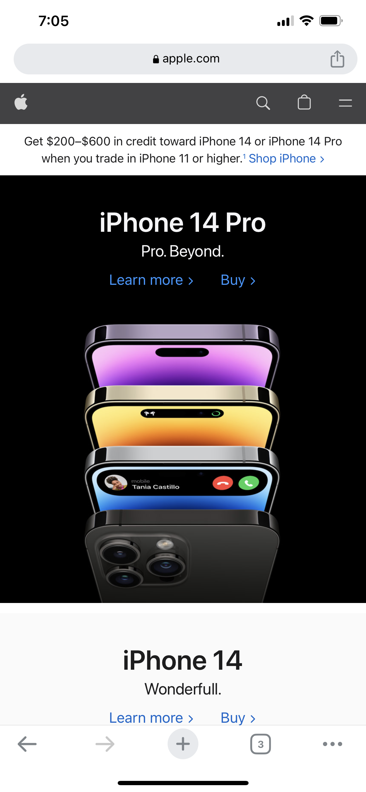
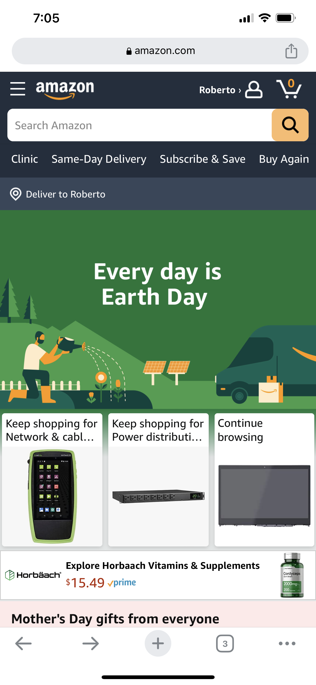
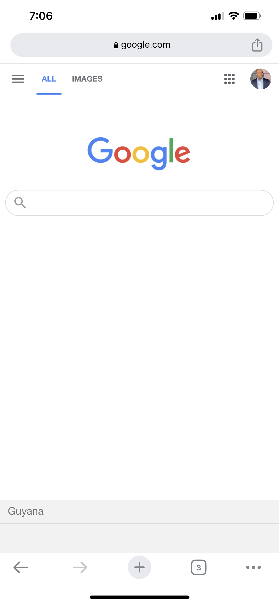

Visual Hierarchy
Apple Apple's website exemplifies visual hierarchy through the use of contrasting colors, font sizes, and placement of elements. The main banner features large and bold typography that immediately catches the user's attention. The smaller text and images below are arranged in a structured layout that guides the user's eye towards the call-to-action buttons.
Hick's Law
Amazon Amazon's website exemplifies Hick's Law by reducing the number of choices presented to the user. The search bar and main navigation menu are prominently displayed at the top of the page, with fewer options presented in submenus or through hover effects. This reduces the user's cognitive load and makes it easier to find what they are looking for.
Fitt's Law
Google Google's website exemplifies Fitt's Law through the use of large clickable targets. The search bar is the main focus of the page, with a large text box and a prominent search button. The search suggestions and other options are also presented in large, clickable elements, making it easy for users to interact with the page using touch devices.